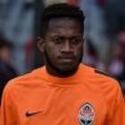

|  | Fred |
| Gender | Male |
| Ethnic | Brazilian |
| Job | Brazilian Footballer |
| Desc | Though Fred’s time with Brazil will forever be tainted by memories of his lacklustre efforts at the 2014 World Cup, the goal poacher was a far more potent presence than that tournament suggested. Still recovering from injury at the time, the fact is that fans had seen a better reflection of Fred’s talents during the 2013 Confederations Cup. A solid goalscorer during his time with Lyon, Fred had finished the World Cup warm-up tournament as the joint-top scorer. Yet unlike Ronaldo, when it came time to deliver on the biggest stage, with the weight of a watching Brazilian public on his shoulders, Fred crumbled. |
Affiliation
| Org | Brazil National Team |
| Club as Player | Manchester United |
| Shakhtar Donetsk |
Relationship
| Agent | Fabio Mello |
2013 08 03 Retrieve
[Fred on World Cup’s anxiety] The closer the World Cup gets, the more the anxiety rises. I’m very happy to have been part of this triumphant Confederations Cup squad, but I know I have to kill a lion every day and continue to prove that I deserve a spot in the Brazil team [in 2014].
2013 12 30 Retrieve
[Fred jokes about his opener against Spain at the FIFA Confederations Cup] I’d already done a lot of nice things lying down, but I’d never scored a goal!
2018 01 07 Retrieve
[Manchester City target Fred is eagerly waiting for the phone call of manager Pep Guardiola] For sure, I would grow a lot with him. I have a lot of room to grow. I have not received [his call] yet, I’m just eagerly waiting. He’ll call me soon!
2018 01 20 Retrieve
[Manchester City will move on from their Alexis Sanchez disappointment by working on deals for West Brom defender Jonny Evans and Shakhtar Donetsk midfielder Fred] At the exit of the locker room, he stopped me and said we had a good game, as they are a very difficult team to beat. But he did not ask me to play with him. However, I confess, I wait impatiently for his call to arrive now. I think I would grow a lot with him, England is the best league in the world, and I’ve always dreamed of playing there.
2018 01 26 Retrieve
[From wind-ups and a drug ban to World Cup hopeful - Who is Manchester City target Fred?] England is the most competitive league in the world. A great coach like Guardiola and a great team like City … I would develop a lot with them.. It’s difficult to understand what happened. But [the ban] has passed and you just have to grow during times like those.
[On Fernandinho] It would be a dream to follow Fernandinho’s footsteps, because he is my role model
The Ukrainian league doesn’t get a lot of coverage. Everybody wants to be in the World Cup … I need to show what I can do on the field
2018 02 08 Retrieve
[Fred is now waiting on a call from City] A friend gave me the news saying that City and Guardiola were interested in me. I’m happy to be so well known in Europe.
[Fred added on a conversation held with Pep Guardiola] At the exit of the locker room, he stopped me and said we had a good game, as they are a very difficult team to beat. But he did not ask me to play with him. However, I confess, I wait impatiently for his call to arrive now. I think I would grow a lot with him, England is the best league in the world, and I’ve always dreamed of playing there
2018 02 21 Retrieve
[The Champions League can lead me to Russia] We spoke quickly at the end of the game. We won and we ended up with an unbeaten record of more than 30 games. Pep came to praise our performance and congratulated me personally, and I also made a point of praising his team. It was nothing more, it was all very brief. Everything else about my possible transfer to City, I only know what I’ve read in the media. I try not to worry about it
I was delighted to be called back into the Brazil squad. I think it was one of the most exciting moments of my life, just because of everything I had been through and it feeling like a had been given a second chance. It was a sign that I was back and had recovered my form on the pitch. It was pleasing to see that being recognised by Tite and his staff. To be able to come back for the final qualifiers was really great. The World Cup squad is not yet final and I will do everything in my power to make it to Russia
[Wednesday night’s clash also pits him against current Brazil No.1 Alisson, who will be keeping goal for Roma] It has everything to be a great match. We are in good form, but we face a strong team with great tradition and with quality players, such as Alisson. We know how difficult it will be, but we are prepared. And when we play well for our clubs, especially in important competitions like the Champions League, we stand out. My future with the Selecao depends on how well I do my job here, and that’s all I’m trying to do
The team is very good, the quality is extremely high, and the mood is the best possible, all thanks to Tite, who has created a comfortable environment. He is a great coach who demands a lot, but also knows how to communicate with his players and is always there to guide everyone in the right direction. Brazil have had a great qualification process and have all the ingredients to have a fantastic World Cup, even though it’s a short tournament anything can happen in that month. The fans are behind the team again and that has given great confidence to the players. Brazil are definitely one of the favourites
I have always been an extremely professional guy with everything. I would never do anything that would harm me, and I am totally against using any kind of resource, illicitly, to benefit myself in any way
[Fred has since hired his own personal biochemist to ensure there will never be another positive test, and retains the physical trainer who helped him through his period away from the game] They were both a huge source of motivation for me
2018 05 25 Retrieve
[In-demand Shakhtar Donetsk midfielder Fred says he wants to wait until after the World Cup to decide his future] I don’t know what I’m going to choose. Maybe I’ll decide better after the World Cup. My head is entirely with the World Cup.
There’s been some advanced talks since January, when I almost went to Man City. United talked to my staff and Shakhtar
It’s an honour to grab the attention of great coaches in Europe, from Manchester and from our own national team. I think I am strong on the field, I am versatile, I can play in several midfield positions. Some coaches like that, it grabs their attention, it is a big deal for me. Versatility, quality, good passing … I think all that catches coaches’ eyes
- 2018 06 04
- Brazilian midfielder Fred has arrived at Manchester United’s training ground for a medical ahead of his pending transfer to the club
2018 06 05 Retrieve
[Man Utd reach agreement for £52.5m man Fred] Manchester United is delighted to announce it has reached agreement with Shakhtar Donetsk for the transfer of Frederico Rodrigues de Paula Santos [Fred].
2018 06 07 Retrieve
[Man Utd new boy Fred suffers injury in Brazil training] Fred had a right ankle trauma and started recovery work, he still has pain and it is too early to do any diagnosis, we have to wait for the first 24 hours
- 2018 06 21
- Manchester United have completed the signing of Shakhtar Donetsk midfielder Fred for a fee in the region of £52.5 million
2018 06 29 Retrieve
[Fred is looking forward to linking up with Nemanja Matic at Manchester United] It was a nice chat with him, he welcomed me for coming to the great club that is Manchester United. We exchanged shirts, too, he will be a great team-mate.
It’s a big change, but I have not stopped yet… It still hasn’t set in, I’m very focused here on the World Cup. I do not think much about it, but it’s a great club in Europe, it’s one of the biggest, so I’m very happy for that
2018 08 23 Retrieve
[Manchester United midfielder Fred has revealed that Arsenal legend Gilberto Silva helped to talk him into a £52.5 million move to Old Trafford] Gilberto was a top midfielder who played for Arsenal. But he has a lot of respect for Manchester United, who are obviously a big club here in England. He praised the club a lot and, after he was granted the opportunity to speak to Jose Mourinho and other senior figures at United, we made the decision together for me to come here. We decided it would be a good move for me. Gilberto is a top guy and his advice means a lot to me. He played in the same position as I do and he won the Premier League, so I look to him for inspiration, I listen to what he has to say and I take on board what he tells me.
2018 08 25 Retrieve
[Fred acknowledges that Manchester United are an easy target for critics due to their standing as a great team] The press likes to talk, right? But the people in the dressing room, it’s a great atmosphere. From what I’ve seen, since I arrived, no one has any issue with anyone inside the club - inside the locker room, on the pitch. On the contrary, it’s everyone trying to help each other. And it’s normal, we lose a game, people will hit us because it’s a great team, it’s a giant here in Europe. So it’s normal, they will speak.
2018 08 26 Retrieve
[New Manchester United addition Fred has admitted that one of his goals at Old Trafford is to bring some life to the dressing room] Anderson is a really lively guy, a really cheerful guy. That’s what Brazilians are like - we’re always having a laugh, we’re always smiling, and my aim is to bring this spirit into the dressing room and onto the pitch, to play with a smile on my face. This helps for me settling in, and the football side of things too.
2018 09 07 Retrieve
[Brazil ready to start from scratch] For us, it is a time to reform, to start all over again from scratch, looking to 2022. But we have these two friendlies, then we have Copa America, so there are a lot of things ahead of us. The first training session saw us begin to renew the team and the first game [against USA on Friday] will be very important to the process.
[Fred is confident he will have no problem integrating into an established and consistent group] We have been playing together for some time, even though I have not played in the starting line-up. We train together and this is a group that has changed very little. There is a long-term relationship there
2018 10 14 Retrieve
[Manchester United midfielder Fred has revealed that Thierry Henry and Gilberto Silva were among his Premier League heroes] I always watched a lot of English football. It has always been really strong. I used to watch United, Manchester City, Chelsea and Arsenal, when Gilberto Silva used to play there. I have many idols like Gilberto, Thierry Henry, Ryan Giggs, Paul Scholes - many great players that have been here as well.
I managed to do some classes in Ukraine but people there didn’t really speak English. They spoke Russian so that’s what I learned there. I didn’t get to practice much English but now I’m here and I’m going to classes. I want to learn as quickly as possible because I know it will help me to integrate and adapt here. I already know a lot of sentences, many words - ‘How are you?’ - I know how to communicate. I’m studying, so hopefully I will be better in no time.
My wife talks a lot with Fernandinho and Ederson’s wives. For the players, the fixtures and training schedules are very different so we end up not having time.
I hang out more with the United squad - Andreas Pereira and the players who speak Spanish. Even those who speak English. We meet after work to play video games and have dinner. It is important for the team. Paul Pogba, Andreas, Eric Bailly… we are close friends
2018 11 08 Retrieve
[Fred has revealed that he had an offer from Manchester City before being lured to Manchester United by the presence of Jose Mourinho] That’s true, I received an offer from them [City] and even talked to my Brazilian team-mates who play for our neighbours. They were trying to convince me to join them, but in the end it didn’t happen. Then it was the summer and, as I said, there were other offers, including from United. I quickly decided that was the right move for me. Mourinho is a top, top professional and every player likes to work with such a winner. I’m learning things from him, that’s for sure. He can be quite strict, but that’s part of his job. He’s also friendly and funny off the pitch, and jokes with us in the dressing room. Jose was crucial in my decision to join Manchester United and I’m grateful for his interest in my football
2018 11 21 Retrieve
[What the hell is going on with Fred?] Mourinho is a top, top professional and every player likes to work with such a winner. I’m learning things from him, that’s for sure. He can be quite strict, but that’s part of his job. He’s also friendly and funny off the pitch, and jokes with us in the dressing room. Jose was crucial in my decision to join Manchester United and I’m grateful for his interest in my football.
2018 12 02 Retrieve
[Manchester United star Fred has admitted that life at Old Trafford has begun in a frustrating manner] I’ve played very little at United, so it’s normal for Professor Tite not to be able to evaluate me, even though I’ve worked hard with him before. Of course, I was annoyed, but I have to know how to deal with the sadness to be able to help me take a step forward. The coach has chosen not to put me in the team. That’s his choice. I still do my job and I can’t let it affect my mindset, I cannot let that shake me. I have to be patient
It’s been a bit of a difficult start for me at United because I have not been playing so much. I had a lot of games in Shakhtar, but it’s a little bit different here. It’s normal, of course, a process of adaptation to a different league. Although I’ve been to Europe before, now I am in a different country and I have to go through a new process of settling in. But today I see myself much better and I hope that my football will be 100 per cent soon. I think I had a great performance against Young Boys in the Champions League. We had the opportunity to score a few times before we scored the goal at the end, but I was very happy to have returned to the field and I hope to continue playing more
2019 03 08 Retrieve
[Manchester United midfielder Fred has attributed his good performances to Ole Gunnar Solskjaer] It’s been a hard few months. I have not been playing. There has been a lot of things going on in my mind. Ole has helped me a lot. He had a lot of chats with me. [Michael Carrick] also speaks to me a lot. That brings me calm that things will turn around for me. They trust me and I feel that trust. And they were right to trust me because I showed that I can play against one of the best teams in the world and play well. I’m very, very happy. My confidence is getting better
This was my best moment since I moved to Manchester United. I felt I had a great game. It’s a long time since I played like this: two games in a row. I’m very happy. I want to continue to play like this, to play games.
[The 26-year-old claimed that he was not surprised that United beat PSG] I wasn’t surprised that we won. All the team played well. I played well. We knew it was going to be hard, but we are Manchester United. PSG knew that whatever happened in the first game, that we are still Manchester United. We have injuries but we are Manchester United. That is our name. Everybody knows us around the world. It was great that we got the win in a place like this
2019 03 11 Retrieve
[Fred disputes questionable call in Man Utd’s defeat at Arsenal] It wasn’t a penalty, I touched Lacazette on his upside in a normal game situation. If it was in the middle of the field, I believe he wouldn’t whistle, but he decided to give the penalty.
Unfortunately, defeats are part of the game. We were on a great run since Ole arrived, with no losses. It serves as a lesson to us, we have had a beautiful victory on last Wednesday [in the Champions League against Paris Saint-Germain], but now we suffered two goals and got the defeat. But we must put our heads up, because the next game will be difficult in the FA Cup, so we must work this week, focus on mistakes, not let them happen again and go for the win always
2019 03 15 Retrieve
[Fred is determined to help Manchester United chase down FA Cup glory] It’s really important. This is a club that lives to win trophies, it’s a huge club. So there’s the FA Cup, we’re still in the Champions League too. We’re going to do our best to bring home the cup. We can do it, we’ve got a real chance. So we’ll do our best, and that starts with the games against Wolves. We’ve got to give it our all to get to the final and bring home the cup.
[Fred said of a potential reunion with Wolves] I’m looking forward to it. It’ll be a difficult match but it’ll be a good match, facing the team I scored my first goal for United against. So I’m looking forward to it. I just want to get out there and play the match. They’re a great team with very good players. But we’re well aware that it won’t be easy, so we’re ready for it. We know how hard it’s going to be, but we’ll be going for the win
2019 06 17 Retrieve
[Fred admits to Man Utd flop after £52m move but expects collective improvement at Old Trafford] Last season, my first one here, was difficult, but I think I ended the season off okay, and I hope next season will be really good for me and a lot better for Manchester United, and I am excited to be a part of that. The English league is difficult and has lots of big clubs but I think the derbies are the best games to play so, when we see the fixture list, we look at those games first. It’s hard to pick out a single team, because there are so many big games here in the Premier League, obviously there are the top teams like Liverpool, City, Chelsea, I think those big games, the ‘big six’ are always good. We always look forward to them, we all want to be on the pitch and to win them.
[Fred confident that the Red Devils will be more competitive as a collective] We have a few things to improve; we were not happy with how last season finished. Unfortunately we couldn’t go a little further in the Champions League and in the other cups, and we didn’t do as well as we wanted in the league, so I think there are things we need to improve. As a team, we will discuss what went wrong so that we can have a better season and challenge for trophies. That’s what we all, and the fans, want the most
I want to say that next season we will be better. We will be looking to challenge for trophies. We are Manchester United and we have to be ready to battle for every trophy, and I’m sure that we will have a successful season with the fans’ fantastic support
2019 08 09 Retrieve
[Fred has boldly declared that both he and the Red Devils as a collective will be better than last season] My first season was a bit difficult. The first year is always a little bit difficult, a year of adaptation, and, moreover, we had a season that wasn’t too strong in terms of the Premier League. But now I’m more used to the league and I’ve been working hard. I’ve talked to the manager and backroom staff, and this season is going to be better than last season. I’m sure it is going to be very successful
[He figured prominently in United’s pre-season preparations, but only after being granted leave in order to get married] I’m really happy to have got married and, thanks to Manchester United, I was able to get my whole family together with my wife on the day. That was a really important day for me, for all of us, and I’m very happy. I had a chat with Mr Ole and he was cool for being so understanding. He was really attentive to my needs and I was allowed to come out of training to go on and get married. I did end up joining the team a bit late [on tour], but I was already training beforehand, so I’m in shape
2019 09 18 Retrieve
[How Fernandinho has flown in Manchester while Fred has flopped. He said in 2017 when a move was first mooted] It would be a dream to follow Fernandinho’s footsteps, because he is my role model. I am flattered by comparisons with him, because he is one of the best Brazilians to have played for Shakhtar
2019 10 08 Retrieve
[Fred accepts Man Utd critics] They are within their rights, they’ve won many titles with this club. We have to shut up and work on the pitch. Some critics are pointless, but many can offer me lessons. I like to read what people are saying about my performances. With that, I can try to get better
[Fred is fully aware of the size of the challenge he faces] I do understand it. Every day when I arrive at the training ground, when I see those big letters with the name of the club, I pinch myself. So I know this club is gigantic. I like to read about its history, best players and historical moments. It hasn’t been great times for us, our rivals are winning titles and we’re not even in the Champions League. It makes our fans sad and I feel sad as well. This club deserves silverware and we’re going to fight to get better. We have to put United back in the place it should never have left
[He is also looking for patience to be shown with Solskjaer] It’s the beginning of his work, even [Sir Alex] Ferguson had difficult times in his first years. I’m positive everything is going to get better
2019 10 08b Retrieve
[Brazilian midfielder Fred has said that criticism, including that from United legend, has to be accepted and used as motivation] They are within their rights, they’ve won many titles with this club. We have to shut up and work on the pitch. Some critics are pointless, but many can offer me lessons
2019 10 22 Retrieve
[Fred admits that he endured a difficult debut campaign at Old Trafford but has vowed to play better as he starts to feel more settled in England] My first season was difficult but that is normal when a footballer changes league. The Ukrainian league isn’t as strong as the Premier League. It’s faster and more physical here.
You need to start games strongly and finish them strongly. It’s the full force for 90 minutes, but it takes time to adapt to English football when you come from Ukraine, even though I was playing against some of the best teams in the Champions League. But I believe I’m adapting.
I’m learning day by day. I feel like I’m getting better. I have a big heart. I will play better. I like Manchester. My family are here and they like it too. They are speaking English. I’m having English classes, too, but it’s not possible all the time because we travel a lot but we speak lots of languages here. I have a good relationship with the manager and the coaches. I speak to the coach (Mike Phelan) every day. And to Michael Carrick and Kieran McKenna. Michael played in my position - he knows what he is saying. They are always encouraging me and I feel the support of fans, too. And I thank them for that
2019 10 26 Retrieve
[Fred says Manchester United must harness last week’s positive point against Liverpool as a turning point in an otherwise disappointing season] We feel great. It was a really good game for us. We’re unhappy with having conceded the goal but in general we were very happy with the performance and now we need to focus to consistently produce this type of performance and get back to winning ways. The game really lifted us again and it was what we needed. Tactically we got things right and we really need to make the most of that - it was an absolutely incredible intensity we played with. There are many positive points we can take into the game against Norwich. There were some negative points as well so we need to correct those on the pitch in our day-to-day preparation, but we need to take the positive points to Norwich, have a great game and go for the win
I’m really happy to have had a run in the team. I’m not so happy about the way we’ve been playing at times but the game against Liverpool feels like a real turning point and I hope I can have a run of form and the team can have a run of form, play great games and get the victories. That’s what we’re all working towards to move us out of the position we’re in at the moment
2019 11 09 Retrieve
[Fred calls for Man Utd to be more consistent in Premier League: ‘We want to be around the top of the table’] Yes, the cups are important, but so is the league. Whatever game we’re playing in, we go on the pitch to do our best and, of course, we’re always looking at the league table. We’re Manchester United, we want to be around the top of the table, we want to be fighting for a Champions League place. So we’re not happy with the position we’re in, but we’ll look to improve, I’m sure of this. We’ll do our best so that we can get into the top positions
[The Red Devils can move up to eighth in the top flight with a win over Brighton] They’re a good team, but all games in the Premier League are difficult. We saw this in the last game against Bournemouth, it was a very difficult game for us. Against Brighton, it’ll be no different, it’ll be a tough game, but we’re Manchester United. We always play to win, to leave with three points. They’re a difficult team to play against. When I arrived here, I played against Brighton [in the 3-2 defeat at the Amex Stadium in August 2018]. They are a team with a lot of strength. It’ll be a tough game but we need to play the ball on the floor. They’ve also been playing well so it’ll be a good game and I hope we come away with the win
2019 11 13 Retrieve
[Manchester United midfielder Fred says the trust placed in him by manager Ole Gunnar Solskjaer is the principal reason behind his upturn in form] The trust from the manager is important and I feel I have this. I just want to continue doing what I’m doing, playing well and starting the games - but I want to score, too. I came close [against Brighton] and hit the bar but I’ll keep working until this happens. I’m very happy, firstly because we won but also because we’re getting some rhythm and we’re doing well in the cups. But we needed to do better in the league. We just have to carry on fighting so that we reach the Champions League. I’m feeling better than I’ve ever felt since moving to England. All I ever wanted was to play regularly and now that I’m doing that, there’s no doubt my confidence is higher and that helps any player
2019 11 14 Retrieve
[Can Man Utd flop Fred save his Old Trafford career?] The Ukrainian league isn’t as strong as the Premier League. You need to start games strongly and finish them strongly. It’s the full force for 90 minutes, but it takes time to adapt to English football when you come from Ukraine, even though I was playing against some of the best teams in the Champions League. But I believe I’m adapting
[he said after the 1-1 draw with Liverpool] I have a good relationship with the manager and the coaches. They are always encouraging me and I feel the support of fans, too. And I thank them for that. I’m learning day by day. I feel like I’m getting better. I have a big heart. I will play better
2019 12 07 Retrieve
[Man City to work with police after fan allegedly aims racist monkey taunt in direction of Lingard & Fred] Manchester City FC are aware of a video circulating on social media which appears to show a supporter making racial gestures during the second half of the match against Manchester United this evening. Officials from the club are working with Greater Manchester Police in order to help them identify any individuals concerned and assist with their enquiries. The club are also working with GMP regarding an instance of objects being thrown onto the field of play. The club operates a zero-tolerance policy regarding discrimination of any kind, and anyone found guilty of racial abuse will be banned from the club for life
2019 12 07b Retrieve
[Fred hits out at ‘backward society’ as he confirms he was hit by lighter in Man Utd’s derby win] Unfortunately we are still in a backwards society. It’s a shame]</b> we still have to live with that in 2019. On the field I didn’t see anything, I saw it only in the locker room afterwards. The guys showed me. He even threw a lighter and it hit me. I try not to care about that. I try to look ahead
Unfortunately, this is happening in some stadiums. It happened here, it happened in Ukraine with some friends. It’s sad, but we have to keep our heads up and forget about that. We can’t give them any attention because that’s all they want. I spoke to the referee after the match, they will do something about it and that’s all. We are all the same regardless of skin colour, hair and gender. We came from the same place and we all go to the same place when it’s all said and done. Thank God I have a lot of friends here in the locker room who hugged me, like Lingard. I don’t want to think about it. I just want to move on
2019 12 08 Retrieve
[Arrest made after alleged racist abuse towards Fred and Lingard in Manchester derby] We can’t give them any attention because that’s all they want. I spoke to the referee after the match, they will do something about it and that’s all. We are all the same regardless of skin colour, hair and gender. We came from the same place and we all go to the same place when it’s all said and done
2019 12 13 Retrieve
[No longer a joke: Reborn Fred the symbol of new, more confident Man Utd] They are within their rights, they’ve won many titles with this club. We have to shut up and work on the pitch. Some critics are pointless - but many can offer me lessons. I like to read what people are saying about my performances. With that, I can try to get better
2019 12 28 Retrieve
[Fred eyes cup treble with Man Utd as he reflects on a ‘year of ups and downs’ at Old Trafford] Firstly, I will continue to do my best to help the team win games and we want to win trophies too. I think we have a good chance in the cups - the League Cup, the FA Cup and the Europa League, which are really important for us and we’ll be looking to win these trophies. I hope to continue doing my best for the team and I hope that we can win a trophy in 2020. We have had some great games beating some big teams but then our performances have been very disappointing against some of the so-called smaller clubs. So it’s definitely been a year of ups and downs and we need to improve next year. We need to treat all games equally and go after the wins because we need to keep improving
[Fred is eager to show exactly why United signed him from Shakhtar Donetsk in 2018] I’m really happy to have had this consistent run in the team, it’s been really important for me to go onto the pitch and make a contribution. I had two of my best performances against Tottenham and Manchester City, and I think I’ve grown and improved. I’m really happy that I can help the team. We have games every couple of days and we need to keep on a good run and, for me, I want to continue to show my true game and show the reason that Manchester United signed me
2019 12 29 Retrieve
[Man Utd midfielder Fred was seen pelted with objects such as lighters and coins by the Man City fans as he was about to take a corner. Another home supporter was also seen making racist monkey gestures in the direction of Fred and Jesse Lingard] Manchester City FC are aware of a video circulating on social media which appears to show a supporter making racial gestures during the second half of the match against Manchester United this evening. The club operates a zero-tolerance policy regarding discrimination of any kind, and anyone found guilty of racial abuse will be banned from the club for life
2020 01 29b Retrieve
[Fred says Man Utd winning a trophy would represent a big improvement] We have to believe. If we don’t believe in ourselves, who else will? We’ll do everything possible to reverse City’s lead and do our best to get the win and make the final. As I said, winning a trophy is really important for us. We have to do our best as it will help us this season, it will help us with all the challenges we face. Winning something would represent a big improvement
[Fred played a crucial role in United’s stunning comeback against Paris Saint-Germain in the Champions League last season, and proved himself a big game player once again during a 2-1 win over City at Etihad Stadium on December 7] They’re different games, one was in the Champions League in another country. They’re different types of games. The other game is against City in the same country, who play in the same championship as us, and we lost against them in the first leg. We need to think about the PSG game as it was a great comeback and also think about the big performance in the last match away against City. We know it will be very difficult but we’ll go for the win and believe in ourselves until the final whistle. We’d be really happy with a win and a place in the Carabao Cup final
2020 02 09 Retrieve
[Fred questions Manchester United’ mentality] We need to improve as a group, our group lacks the ‘sticking together mentality’, we have lots of problems. There’s always some discussions within the group. [There is] a little vanity, yes, as there is in most groups. We must stop this, we should talk less in the dressing room and start running on the pitch. When everyone has the same goal, that’s when we’ll move forward. We need to be on the same page and today some players have different objectives, there are players that just want to solve problems alone and this is wrong
He’s a good person and a good trainer. He is a young manager, and will grow and improve. He will help us
2020 02 19 Retrieve
[Fred backs Solskjaer but admits Man Utd are ‘not doing as well’ as they should be] Being highlighted now is very good, but there is the other side and unfortunately the team is not [doing] as well as it could be. We wanted to compete for the lead with Liverpool, but we are below Chelsea [and] Tottenham. It is part of football and we need to know how to deal with it and raise our heads, because we have a very high-quality team. You have to be charged [to deal with pressure] because it is a gigantic team. When things don’t work out, it is logical that the fans will talk. And it’s up to us to deal with the pressure off the pitch. The crowd got used to seeing many titles due to the size of United and they want those moments again. They are right and they must always want it
Solskjaer is our teacher and does a good job. He is young and growing every day. He learned a lot and will grow as a coach and person. It is up to the board to decide, we do not have the power to decide on this. But he is very nice, he is an extraordinary person, he talks a lot, he has a playful side and he is always smiling. The day to day is great and he is very important for the team, as he was as a player in the history of the club
[Fred acknowledges Pogba’s larger than life personality] He’s a great person and a great player. On a daily basis we [are] together a lot. He’s a good guy and we try to bring him closer to United. Unfortunately, he was injured a lot this season, but he can still help a lot. Needless to say, he is a great player. May he recover quickly, because he is a world champion and being 100 per cent will help us a lot. We feel bad because of the injury. His way of being does not change the good person and the great player he is. He’s a very hard-working guy, who struggles to get back soon. He has his personality, but that shouldn’t get in the way of any analysis
2020 02 29 Retrieve
[Man Utd midfielder Fred reveals his ideal position after double against Club Brugge] I think my ideal position is to join the attack a bit more like I did at Shakhtar Donetsk. I played more as a box-to-box midfielder, so I played a little bit further forward. Here, all teams play compact [compared to Ukraine]. Other teams make it harder to get near the penalty area to shoot and to get into scoring positions. It’s a bit different. But I think [box-to-box] is my ideal position. I’m playing well and getting better every day
Michael Carrick helps me a lot day-to-day. We always talk and he tries to help me with my positioning on the field. He’s someone who always talks to me, which is important for adapting my football to the Premier League. When I arrived, I would control the ball in midfield and then one or two opposition players would come along and I’d be knocked off the ball. Now I can understand the game better, knowing that I have to be quicker and stronger. So Carrick helps me day-to-day, keeping me calm. We do some one-on-one training, so he’s someone who influences me a lot at the club
I want to be a big player and be part of the history of Man United. I already am, but I want to make history here at the club and to win some trophies, so that is my goal at Man United. I came here because it’s a big club, so, as I said, I want to win trophies, continue to work hard here and make my name at Man United
2020 03 17 Retrieve
[Man charged for racist behaviour during Man City’s loss against Man Utd at Etihad Stadium in December] On the field, I didn’t see anything, I saw it only in the locker room afterwards. Unfortunately, this is happening in some stadiums. It happened here, it happened in Ukraine with some friends. It’s sad, but we have to keep our heads up and forget about that
2020 04 23 Retrieve
[Man Utd star Fred ‘very grateful’ to Carrick for helping him through testing ‘adaptation’ at Old Trafford] He has helped me a lot in this process of adaptation and transition. He’s a guy who was an idol at the club and was a great player in the same position that I play. On a daily basis, he helps me a lot, always talking to me. After training we always do a little work to complement it, sometimes finishing, sometimes passing. He’s a guy who understands the game, who lived it, and it’s impossible for there to be anyone better than him to help me. He knows about the difficulties, the shortcuts, and he tries to show me everything there is in training and in games. He’s a guy who has been of huge importance for me at United and I’m very grateful to him.
There is always that adaptation process, right? Last season was very difficult, it changed a lot not only in my career, but also in my personal life. My wife was pregnant when I arrived in England, we were in a different condition. I arrived at a club of a gigantic dimension, a championship that is the most disputed, the best in the world, so it ends up being difficult to adapt. This season I managed to put my football into practice, I had a good sequence of games, which I didn’t have last season. I am very happy to be playing well, to be doing a great championship and I hope that when I return, I can improve more and more.
2020 04 23b Retrieve
[Fred names James Garner as the best young player at Manchester United ahead of Greenwood and Williams] They are all great players. The club has an important role in using many academy players, it has this history of using the kids that come up from the academy, who turn professional and make history at the club. This process is important. They are great players, with a lot of potential for the future. All are very good, they are not in this profession for nothing, but the player who impresses me most is Jimmy Garner. Not just because he is in the same position as me, but because he is a player who has an impressive vision of the game, and he has a huge future for United. In addition to his impressive game vision, he always plays with his head up, has an impressive shot and is an incredible passer. He is a player that I admire a lot
Ole is a great coach. He’s still a young guy, he’s going to grow a lot in football as a coach. He was a player, he understands how the player feels, and this is important for us in the squad. He added a lot, had a lot of experience as a player and is now starting to have that experience as a coach. He always helps us on the pitch, talking, he’s a very good guy, and I’m happy to be following his transition at United. I’m sure he will grow a lot, get a lot of experience and that he will become one of the great coaches (in the world)
2020 04 23c Retrieve
[Fred credits Bruno Fernandes for transforming Man Utd] We were living in a very good phase, we were in a growing phase. We were doing very well in the Premier League, very well in the Europa League. We would have a chance to be champions (of the Europa League) before the stop. Our group got together a lot at the end, we started helping each other, with a different view of the game, and we grew up on the pitch. We started to get better together, and Bruno Fernandes’ arrival was important for us, giving a calm change to our midfield. But we must also give credit to Ole and our entire group, because we were on a very, very good rise.
Bruno Fernandes is a very important player, he arrived and gave an ‘up’ in our squad. He is a player with a lot of ambition, but I believe that every player who plays for Manchester United needs to have this ambition to want to win, to be victorious, because it is a gigantic club. We always have to think about the titles, the victories. He arrived very well, helped us a lot and, for sure, he is an inspiration to be followed. I’m sure he will still grow a lot within United
Michael Carrick is an assistant coach who helped me a lot in this process of adaptation and transition. He’s a guy who is an idol in the club and was a great player in the same position that I play. On a daily basis, he always helps me a lot, he is always talking to me. After training, we always do a little work to complement it. Sometimes finishing, sometimes passing, launching. He’s a guy who understands the game, who lived it. And it is impossible for anyone better than him to help me there. He knows about the difficulties, the shortcuts, and he tries to show me everything there in training, in games. He’s a guy who has huge importance for me at United, and I’m very grateful to him
2020 04 30 Retrieve
[Manchester United midfielder Fred has explained how Bruno Fernandes’ arrival at Old Trafford can help him score more goals for the club] I hope so as it’s always important to score goals. I’ve been working on it and, with Bruno’s arrival, we’ve got someone who gives us more freedom, given his quality with the ball at his feet. So I hope to attack and score more goals and work hard on my finishing to score more goals in a season. I’m certain that, with Bruno’s arrival, more goals will come.
My favourite role is where I’ve been playing. As a second central midfielder, defending solidly but also getting forward and looking to score goals. I think it’s important that a central midfielder has good approach play and finishing skills. The way I’ve been playing is the way I like to play and I feel really good in this position
2020 05 06 Retrieve
[Fred claims Bruno Fernandes has brought a calming influence to United’s midfield] We were living in a very good phase [before the coronavirus pandemic], we were in a growing phase. We were doing very well in the Premier League, very well in the Europa League. We would have a chance to be champions [of the Europa League] before the stop. Our group got together a lot at the end, we started helping each other, with a different view of the game, and we grew up on the pitch. We started to get better together, and Bruno Fernandes’ arrival was important for us, giving a calm change to our midfield. But we must also give credit to Ole and our entire group, because we were on a very, very good rise
2020 05 07 Retrieve
[Fred admits first season at Man Utd was ‘awful’] I believe the first season was very difficult for me. There was the process of settling down here, but also other personal things that were happening in my life, such as the birth of my son. So I believe it was a mix of reasons that made me have an awful first season. I’m definitely settled in every aspect now. I’ve been enjoying some good performances and the chance of playing a great sequence of games. That was also helpful. I’m delighted with this season. I’m now playing well and hopefully I can keep the momentum if the league returns. I just want to give my best for this club, trying to be a key part of the team.
It’s doubtful. We honestly don’t know. There’s a lot of speculation. People say we might play in neutral venues and players will be confined until the end of the league. There are a lot of suggestions, but that’s it, speculation. We will probably return to training without knowing what will happen. I want to play the league, and hopefully everything will go that way. Hopefully we can beat this virus and every family return to normal life. I mean, it will never be the same ‘normal’ as before, but hopefully we resume somehow from the point we stopped
2020 05 16 Retrieve
[Red Devils team-mate Fred says is hoping that a Paul Pogba can be kept at Old Trafford] Pogba is a great player. The people who are here on a daily basis with him know that. Everyone who watched the World Cup and watched his football knows that he’s a great player. And for sure we want him to stay. Because he will add a lot to us. He’s a guy who has an immense quality, he’s a strong player for the Premier League. He knows how to play the Premier League. So I’m sure I want him to stay because I’m sure he will help us a lot. We’re in the same position, but the more quality players on the team, the better. You will not build a team with 11 players. You need a strong squad. So I really hope that he stays, and if he stays, I’m sure he will be a very strong reinforcement for us next season